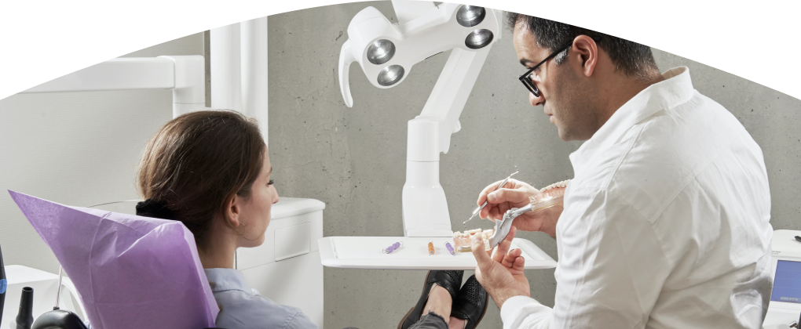

/
Блог/
Отбеливание в стоматологии вредно или нет?Лечение зубов во сне
Что такое лечение под седацией?
Забудьте, что лечение у стоматологов это больно, страшно и большой стресс для организма. Современная стоматология имеет множество решений для пациентов, которые боятся лечить зубы. В нашей стоматологии легко, безопасно и быстро вылечат ваши зубы. Лечение под седацией (лечение во сне) подходит даже детям. Это один из вариантов анестезии, который погружает пациента в легкий дрем. Пациент не теряет сознание, не отключается полностью. Благодаря такой анестезии, мы создаем для пациента успокаивающую атмосферу, чтобы расслабить и убрать панику.
Хочется поделиться цитатой нашего главного врача клиники Евгения Носова:
Мы заботимся о своих пациентах. Высокий уровень специалистов и сервиса показывает наше отношение к своему делу. Приоритетом для нас всегда был комфорт пациента и его верное лечение.
Доверьте свои страхи профессионалам. Перед лечением проводим высокоточную диагностику. Умеем лечить под микроскопом в особо сложных случаях. Лечение во сне ценится по всему миру, выбор остается за пациентом.
Можно с уверенностью сказать, что седация имеет минимум показаний, подходит даже для сердечников. Наши пациенты ценят подход наших врачей и рекомендуют лечение в нашей клинике. Один из наших пациентов сказал: «Можно вылечить зубы один раз и больше не ходить к стоматологам, а можно вспоминать об этом с улыбкой и благодарностью и возвращаться за помощью вновь и вновь»
Почему мы рекомендуем лечить зубы под седацией?
Если вы запустили свои зубы и давно были у стоматолога, то в стоматологическом кресле вам точно будет не комфортно. При стрессе организм блокирует мышцы и ваша челюсть будет в напряженном состоянии, что может повлечь за собой ряд неприятных ощущений после лечения. Чтобы быть в расслабленном и спокойном состоянии, приходите на лечение во сне. Такое лечение имеет ряд преимуществ, обладает высоким спросом у пациентов.
Преимущества лечения под седацией:
- Седация — не наркоз. Лечение во сне включает в себя использование снотворные препараты короткого действия. После такого лечения очень быстрый «выход», сразу же после лечения вы спокойно можете отправиться домой.
- Хорошие воспоминания после лечения. Сильный страх стоматологов сможет побороть только лечение во сне.
- До 14 часов в стоматологическом кресле. Если вы сильно запустили свои зубы, то мы рекомендуем воспользоваться лечением во сне. Данная процедура поможет вылечить ваши зубы всего за 1 визит.
- Нет рвотного рефлекса. Некоторым пациентам тяжело лечить зубы из-за повышенной чувствительности глоточным спазмам. Иногда седация это единственный выход из такой ситуации.
Рекомендуем нашим будущим пациентам делать правильный выбор. Выбирайте клинику с лицензированным анестезиологическим отделением, где работают профильные специалисты данной клиники на постоянной основе. На лечении вас должны сопровождать врач анестезиолог-реаниматолог и анестезиологическая медсестра. Далее вы можете ознакомиться с ценами на лечение во сне в нашей клинике.
| Вид услуги | Длительность | Стоимость |
|---|---|---|
| Лечение кариеса | 40-60 минут | от 12 200 руб. |
| Лечение некариозных поражений | 30-50 минут | от 6 400 руб. |
| Диагностическая ревизия с использованием микроскопа | 50 минут | от 9 000 руб. |
| Механическая и медикаментозная обработка зубных каналов | 1 час | от 10 100 руб. |
| Седация, комбинированное обезболивание | 1 час | от 14 000 руб. |